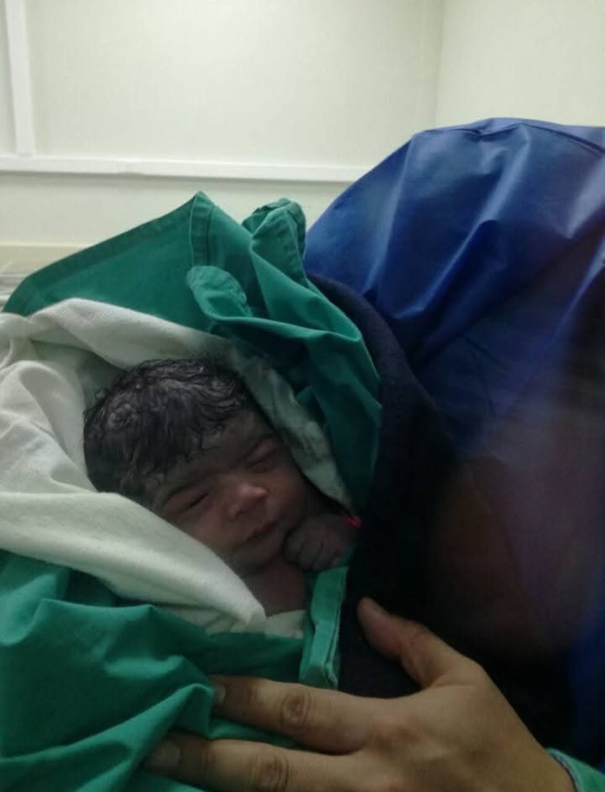
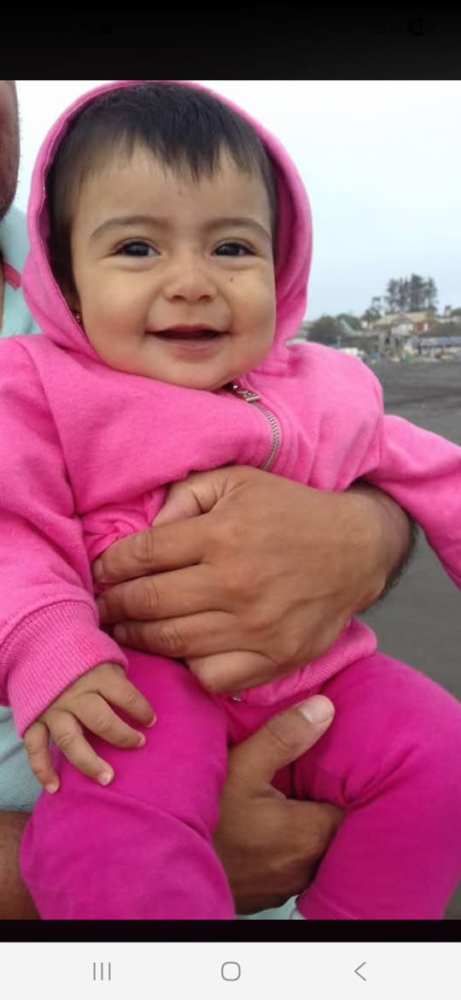
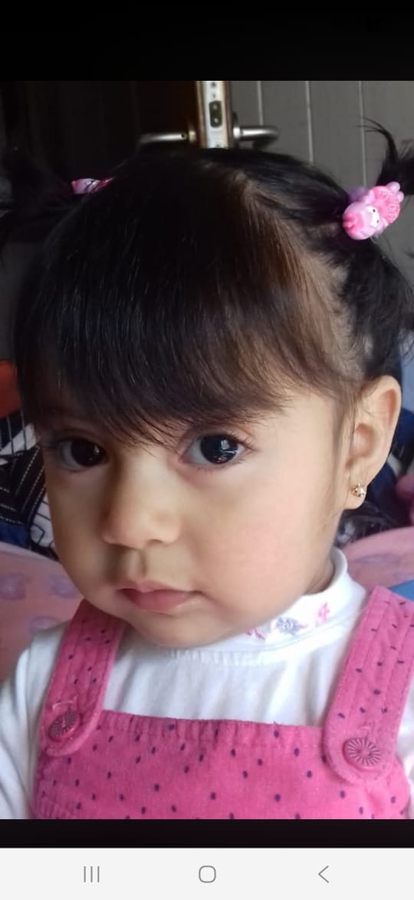
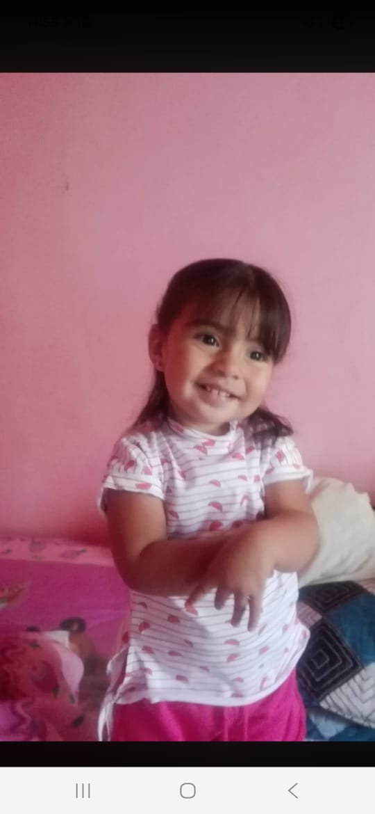
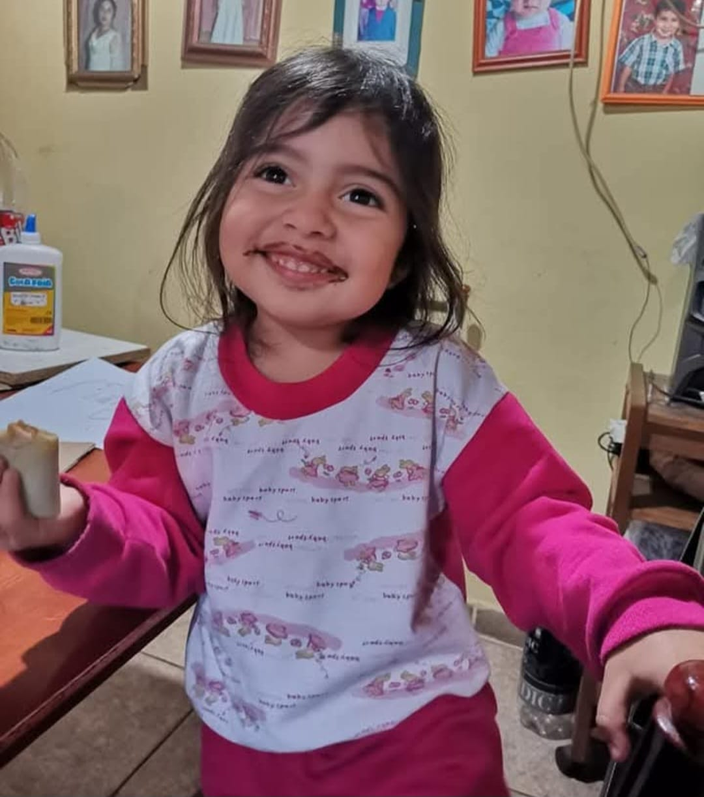
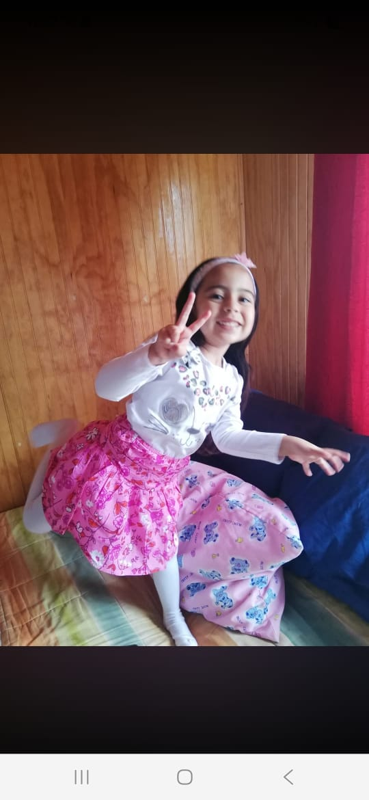
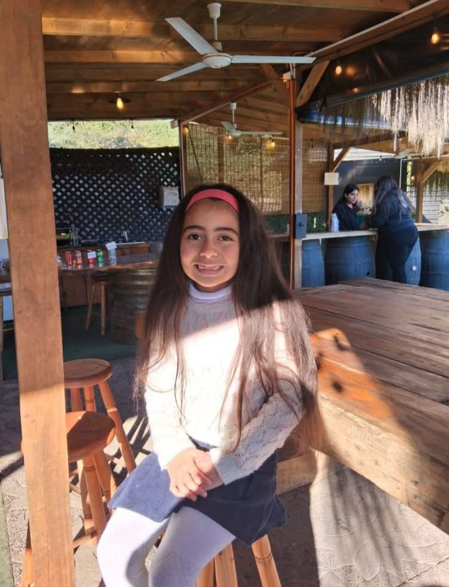
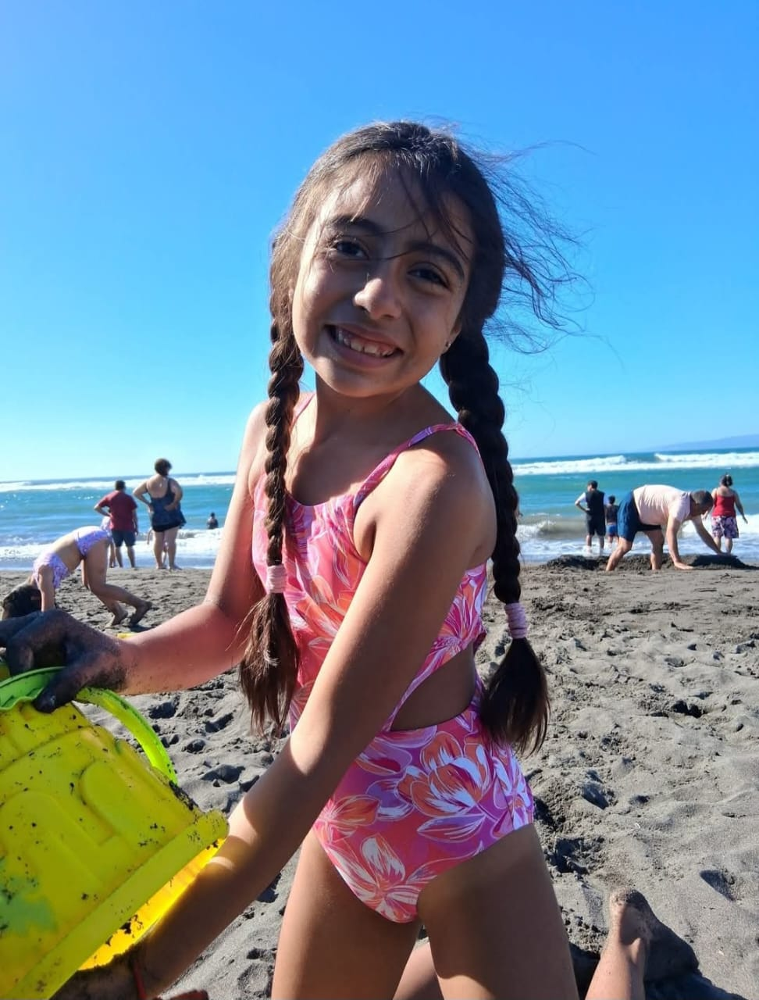

🐈 ¡Bella memoria!
Te invito a un viaje lleno de amor, travesuras y ronroneos en mi Parque de Juegos Gatuno. 🐾
¡Miren cuánto he crecido en estos 9 añitos mágicos! Haz clic en cada fotito para verla en grande. 💖








Sábado 20 de Junio
A partir de las 17:00 Horas
Mi Refugio Gatuno
Ramón Freire Serrano 407
San Vicente de Tagua Tagua
El gatito está aburrido. Presiona los botones de abajo para enviarle juguetes y ver cómo reacciona.